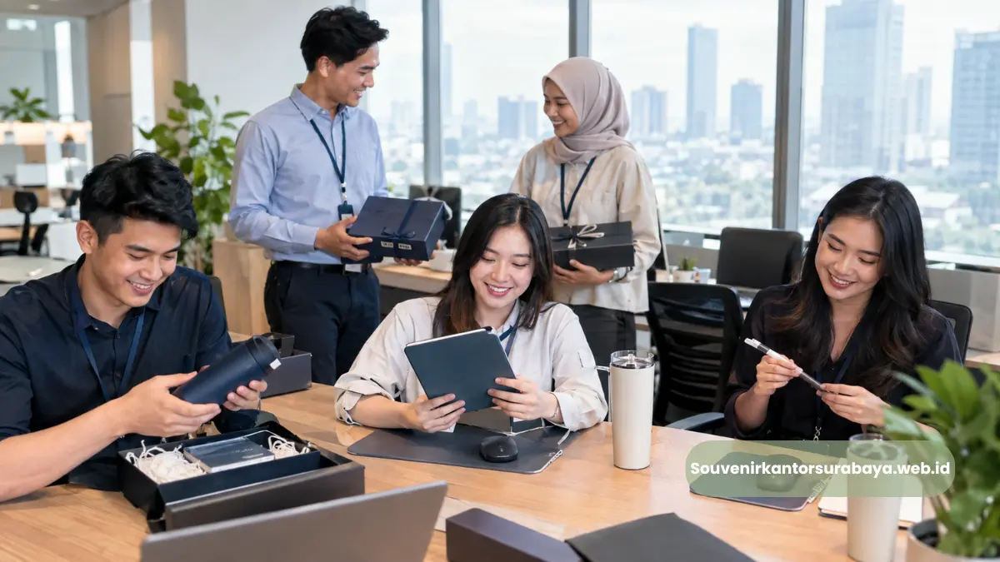

- Souvenir Kantor Corporate Menjadi Solusi Apa untuk Kebutuhan Perusahaan?
- Mengapa Souvenir Kantor Corporate Relevan untuk Branding Perusahaan?
- Produk Apa yang Cocok untuk Souvenir Kantor Corporate?
- Bagaimana Menentukan Kualitas Souvenir Kantor Corporate?
- Bagaimana Personalisasi Logo dan Warna Korporat Diterapkan?
- Apa Perbedaan Souvenir Kantor Corporate dengan Gift Set Kantor?
- Bagaimana Souvenir Corporate Digunakan dalam Acara Perusahaan?
- Mengapa Produk Ergonomis Layak Dipertimbangkan untuk Kantor Modern?
- Bagaimana Souvenir Kantor Corporate Dapat Disesuaikan dengan Kebutuhan Malang?
- Bagaimana Data Digital Mendukung Relevansi Merchandise Kantor?
- Siapkan Souvenir Kantor Corporate untuk Kebutuhan Perusahaan
Souvenir kantor corporate untuk perusahaan Malang merupakan cinderamata kerja yang dipersonalisasi dengan identitas perusahaan untuk employee gift, relasi bisnis, acara kantor, dan kebutuhan branding.
- Souvenir kantor corporate dapat digunakan untuk karyawan, klien, mitra bisnis, peserta acara, dan tamu perusahaan.
- Custom logo membantu menjadikan produk sebagai bagian dari identitas visual perusahaan.
- Produk fungsional seperti mouse pad, notebook, tumbler, dan gift set kantor relevan dengan aktivitas kerja.
- Kualitas bahan, fungsi, tampilan logo, kemasan, serta kesesuaian penerima perlu dipertimbangkan sejak awal.
- SouvenirKantorSurabaya.web.id dapat diarahkan untuk kebutuhan pemesanan dan konsultasi produk.
Souvenir Kantor Corporate Menjadi Solusi Apa untuk Kebutuhan Perusahaan?
Souvenir kantor corporate menjadi media pemberian apresiasi sekaligus sarana membawa identitas perusahaan ke lingkungan kerja dan hubungan bisnis secara lebih konsisten.
Souvenir kantor corporate bukan sekadar benda pemberian. Dalam kebutuhan B2B, produk dapat dirancang sebagai bagian dari program employee gift, corporate gifting, merchandise acara, onboarding kit, hadiah relasi bisnis, maupun cinderamata kantor.
Target pemakainya dapat berbeda. HRD dapat menggunakannya untuk apresiasi karyawan atau kegiatan internal. Tim marketing dapat memanfaatkannya sebagai merchandise acara. Manajemen dapat menggunakannya sebagai hadiah untuk klien dan mitra. Sementara event organizer dapat mengintegrasikannya ke dalam paket kegiatan perusahaan.
Mengapa Souvenir Kantor Corporate Relevan untuk Branding Perusahaan?
Souvenir kantor corporate mendukung branding melalui penggunaan produk yang konsisten, personalisasi logo, pengalaman penerima, dan keterhubungan dengan aktivitas perusahaan.
Pertama, logo, warna korporat, bentuk kemasan, dan elemen desain dapat dibuat konsisten. Produk seperti notebook, tumbler, mouse pad, pouch, atau stationery dapat menjadi bagian dari visual workplace.
Employee gift juga dapat diberikan pada momen seperti onboarding, ulang tahun perusahaan, pencapaian tim, pelatihan, atau kegiatan internal. Hadiah relasi bisnis dapat memakai gift set kantor dengan kemasan profesional sesuai konteks hubungan.
Produk Apa yang Cocok untuk Souvenir Kantor Corporate?
Produk yang paling relevan adalah barang fungsional seperti mouse pad, notebook, tumbler, stationery, pouch, tas kerja, dan gift set yang sesuai kebutuhan penerima.
Mouse pad ergonomis custom logo dapat menjadi pilihan untuk perusahaan dengan banyak aktivitas komputer. Notebook, pulpen, tumbler, pouch, dan tas kerja juga dapat digunakan untuk kebutuhan merchandise, employee gift, atau hadiah relasi bisnis.
Gift set kantor menggabungkan beberapa produk dalam satu paket. Komposisinya dapat disesuaikan dengan penerima, acara, dan positioning perusahaan.
Baca Juga
Bagaimana Menentukan Kualitas Souvenir Kantor Corporate?
Kualitas souvenir kantor corporate perlu dinilai dari material, fungsi, ketahanan, finishing, hasil custom logo, kemasan, dan kesesuaiannya dengan penggunaan.
Kualitas tidak hanya berarti produk terlihat premium. Produk juga harus sesuai dengan aktivitas penerima. Untuk produk meja kerja, perhatikan permukaan, ukuran, stabilitas, bahan, dan kenyamanan.
Custom logo juga perlu dipertimbangkan. Logo yang terlalu besar dapat membuat produk terasa seperti media iklan, sedangkan logo yang terlalu kecil dapat kehilangan keterbacaan. Penempatan yang proporsional biasanya lebih sesuai untuk souvenir korporat elegan.
Bagaimana Personalisasi Logo dan Warna Korporat Diterapkan?
Personalisasi logo sebaiknya mengikuti identitas visual perusahaan dengan ukuran, posisi, warna, dan metode cetak yang sesuai karakter setiap produk.
Logo merupakan elemen utama, tetapi tidak harus menjadi satu-satunya elemen desain. Warna korporat, tagline, pola grafis, atau nama kegiatan dapat digunakan jika sesuai kebutuhan.
Untuk pemesanan dalam jumlah besar, desain final sebaiknya dikonfirmasi sebelum produksi agar ukuran logo, posisi, dan warna sesuai kebutuhan perusahaan.
Apa Perbedaan Souvenir Kantor Corporate dengan Gift Set Kantor?
Souvenir kantor corporate dapat berupa satu produk atau merchandise, sedangkan gift set kantor menggabungkan beberapa produk dalam satu paket pemberian.
Souvenir tunggal lebih sederhana dan sesuai untuk kebutuhan peserta dalam jumlah besar. Contohnya mouse pad, notebook, tumbler, atau pulpen.
Gift set lebih sesuai ketika perusahaan ingin memberikan pengalaman pemberian yang lebih terstruktur, misalnya notebook, pulpen, tumbler, pouch, dan kartu ucapan dalam satu paket.

Bagaimana Souvenir Corporate Digunakan dalam Acara Perusahaan?
Souvenir corporate dapat ditempatkan sebagai merchandise peserta, employee gift, hadiah relasi, perlengkapan acara, atau bagian dari paket apresiasi perusahaan.
Pada seminar dan pelatihan, produk dapat menjadi bagian dari perlengkapan peserta. Pada gathering, souvenir dapat diberikan sebagai bentuk apresiasi. Pada anniversary, produk dapat dirancang menggunakan tema identitas perusahaan.
Dalam konteks HRD, merchandise juga dapat menjadi bagian dari onboarding. Produk yang digunakan dalam pekerjaan sehari-hari membuat pemberian terasa lebih relevan daripada sekadar cinderamata.
Mengapa Produk Ergonomis Layak Dipertimbangkan untuk Kantor Modern?
Produk ergonomis dapat menjadi merchandise yang relevan karena menghubungkan kebutuhan meja kerja dengan perhatian perusahaan terhadap kenyamanan penggunaan.
OSHA menjelaskan bahwa penempatan mouse, ukuran, bentuk, serta dukungan telapak atau pergelangan merupakan bagian dari pertimbangan workstation komputer.
Namun, istilah ergonomis tidak berarti produk otomatis cocok untuk semua pengguna. Bentuk tangan, kebiasaan kerja, posisi meja, perangkat yang digunakan, dan preferensi individu tetap memengaruhi kenyamanan.
Bagaimana Souvenir Kantor Corporate Dapat Disesuaikan dengan Kebutuhan Malang?
Perusahaan dapat menyesuaikan produk berdasarkan jumlah penerima, jenis acara, profil penerima, identitas visual, fungsi produk, dan kebutuhan pengiriman ke Malang.
Melayani kebutuhan perusahaan di Malang berarti pilihan produk tidak perlu dibatasi pada cinderamata konvensional. Produk kerja seperti mouse pad, notebook, tumbler, dan gift set dapat menjadi alternatif untuk perusahaan dengan aktivitas kantor yang intensif.
Untuk kebutuhan tahunan, perusahaan juga dapat membuat beberapa kategori merchandise berdasarkan momen, seperti employee gift untuk internal, merchandise untuk acara, dan hadiah relasi bisnis untuk pihak eksternal.
Baca Juga
Bagaimana Data Digital Mendukung Relevansi Merchandise Kantor?
Tingginya penggunaan internet dan aktivitas digital membuat aksesori kerja berbasis komputer semakin relevan sebagai bagian dari merchandise perusahaan modern.
BPS mencatat pada 2024 sebanyak 99,08 persen penduduk Indonesia yang mengakses internet menggunakan telepon seluler, sementara penggunaan laptop tercatat 10,12 persen dan komputer 2,62 persen. Data tersebut menggambarkan akses internet, bukan penggunaan perangkat kerja kantor secara khusus.
Karena itu, angka tersebut tidak dapat digunakan untuk menyimpulkan kebutuhan mouse pad perusahaan secara langsung. Dalam konteks workplace, perangkat komputer tetap menjadi bagian dari aktivitas kerja sehingga aksesori meja kerja dapat dipertimbangkan berdasarkan profil pengguna.
Siapkan Souvenir Kantor Corporate untuk Kebutuhan Perusahaan
Tentukan jenis penerima, jumlah kebutuhan, konsep branding, dan fungsi produk sebelum berkonsultasi untuk mendapatkan pilihan souvenir kantor corporate yang sesuai.
Untuk perusahaan yang membutuhkan souvenir korporat elegan, employee gift, merchandise acara, atau gift set kantor, SouvenirKantorSurabaya.web.id dapat menjadi tujuan untuk melihat pilihan produk dan mendiskusikan kebutuhan corporate gifting.
Gunakan kebutuhan seperti jumlah penerima, jenis acara, target waktu, serta identitas visual perusahaan sebagai dasar konsultasi agar produk yang dipilih lebih relevan.

Hawa Nadira
Tim penulis CorporateGifts ID berfokus pada strategi souvenir kantor, merchandise korporat, dan inovasi brand untuk klien B2B.
Keahlian: Branding perusahaan, produksi souvenir, paket event, desain materi promosi.
Artikel Terkait

Mouse Pad Ergonomis Custom Logo Semarang
Mouse pad ergonomis custom logo untuk kantor di Semarang sebagai aksesori meja kerja, employee gift, dan media branding perusahaan.
Baca Selengkapnya
Souvenir Kantor Corporate untuk Branding Perusahaan
Souvenir kantor corporate untuk employee gift, relasi bisnis, dan branding perusahaan. Pesan custom logo untuk kebutuhan kantor.
Baca Selengkapnya
Gift Set Kantor Elegan untuk Mitra Bisnis, Ini Pilihannya
Rekomendasi gift set kantor elegan untuk mitra bisnis dengan produk berkualitas premium.
Baca Selengkapnya